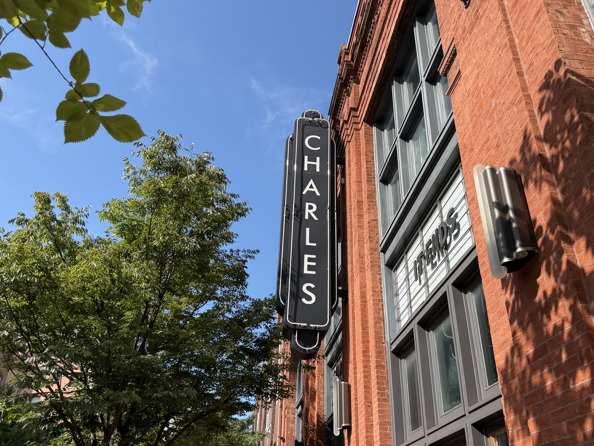
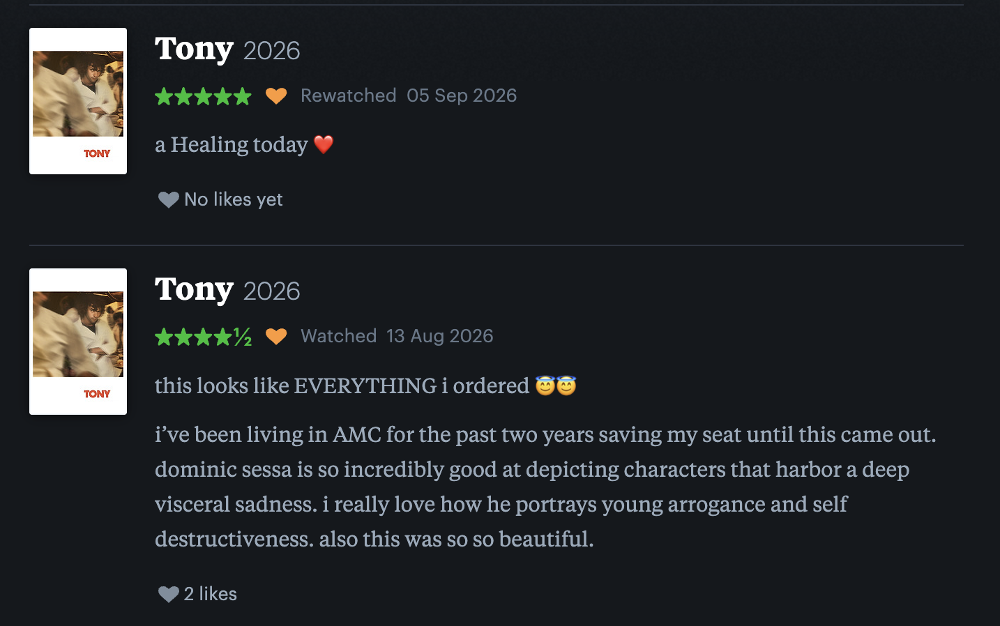

i love spending my weekends exploring baltimore city. there is so much to see and admire. today, i decided to document what i saw during my exploration!

i had sooo much fun exploring the bmore flea and going to the movies with rania! this was my second time seeing tony and i loved it so much.
dominic sessa is my favorite actor currently. i loved writing a review on letterboxd afterwards too!! :)
